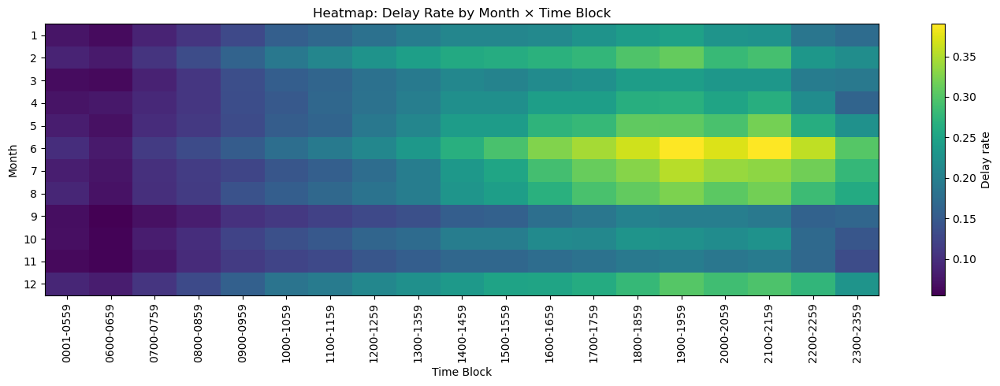
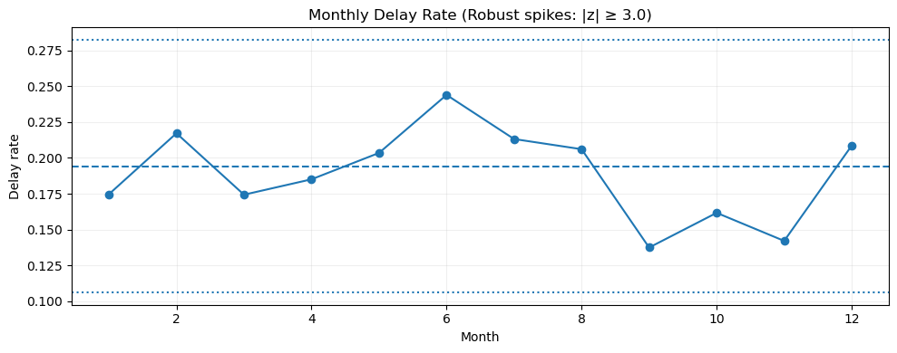
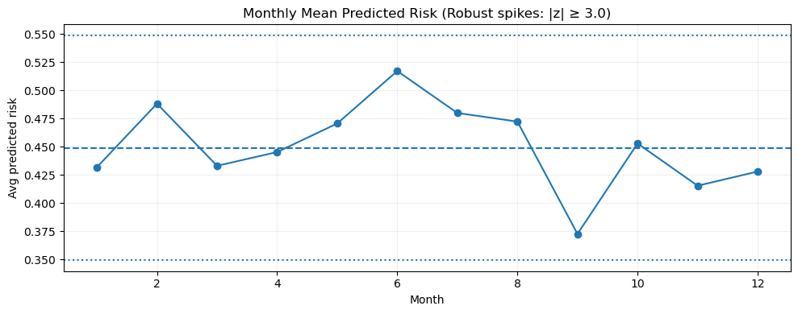
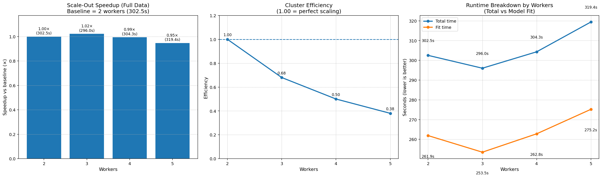
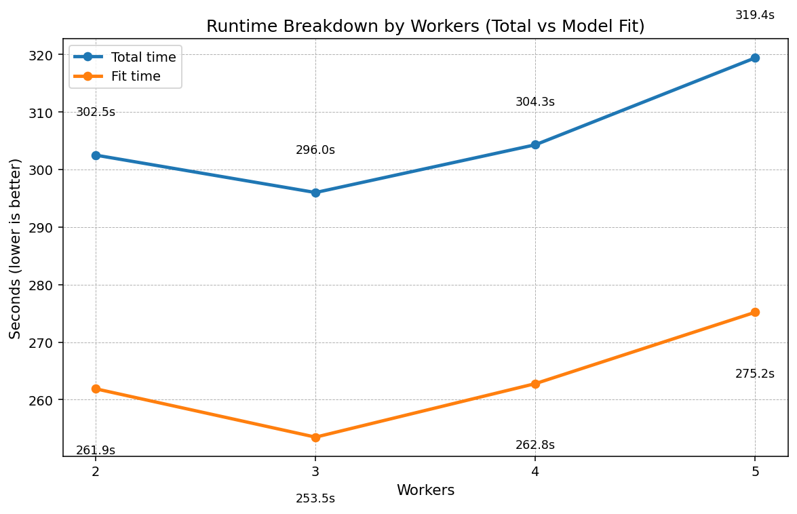

Big Data • PySpark • Dataproc
A distributed PySpark and Apache Spark MLlib pipeline for cloud-scale ETL, feature engineering, model benchmarking, and cluster scaling analysis.

This repository presents a portfolio-ready distributed machine learning workflow for airline delay prediction. It combines cloud ETL, leakage-safe feature engineering, Spark MLlib model comparison, and a scale-out study that shows what happened when cluster size increased under real quota constraints.
Flight records processed through a Spark-based pipeline.
Binary departure-delay label for flights delayed more than 15 minutes.
Strongest overall ranking quality in the final MLlib comparison.
Measured on the held-out test set.
Also achieved by the GBTClassifier.
Best observed relative speedup at 3 workers on the 25% benchmark.
| Model | Test ROC-AUC | Test PR-AUC | Precision | Recall | F1 | Recall@Top5% |
|---|---|---|---|---|---|---|
| GBT | 0.6759 | 0.3182 | 0.3212 | 0.3829 | 0.3493 | 0.1270 |
| Logistic Regression | 0.6571 | 0.2921 | 0.2724 | 0.4855 | 0.3490 | 0.1128 |
| Random Forest | 0.6460 | 0.2814 | 0.2635 | 0.4840 | 0.3412 | 0.1130 |




The original final report PDF from the course submission is not included because it exceeds GitHub's standard file-size limit. The technical substance is preserved through the merged analysis export, notebook, supporting reports, and presentation materials.